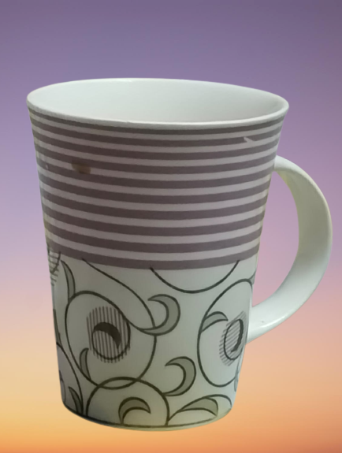
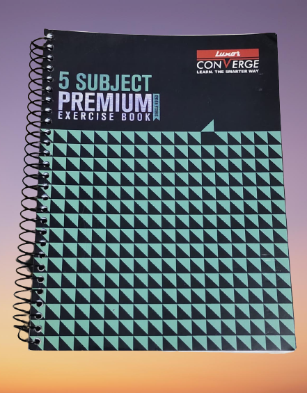
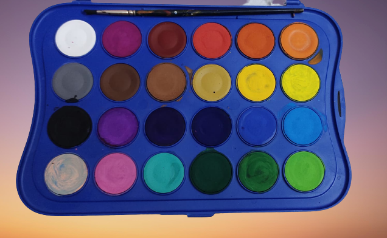
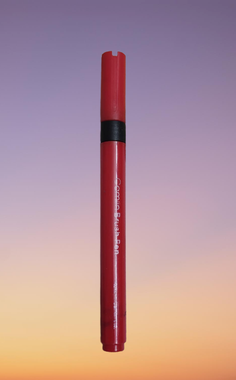

Case Study- Google Lens vs Mobilenet
Which one is Better ?
GOOGLE LENS
VS
MOBILENET
Test Image :-

Output on Google Lens
Ceramic Mug
Output on Mobile Net Model
Mug
Google lens is more accurate.
Test Image :-

Output on Google Lens
Luxor Converge Notebook
Output on Mobile Net Model
Notebook
Google lens is more accurate.
Test Image :-

Output on Google Lens
Akwarele Giotto 24
Output on Mobile Net Model
Color Case
Google lens is more accurate.
Test Image :-

Output on Google Lens
Camlin Brush Pens
Output on Mobile Net Model
Pen
Google lens is more accurate.